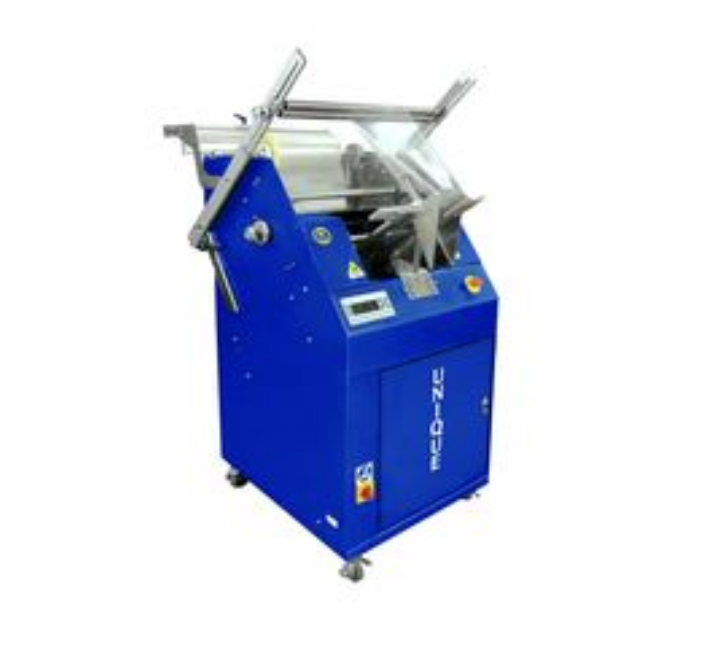
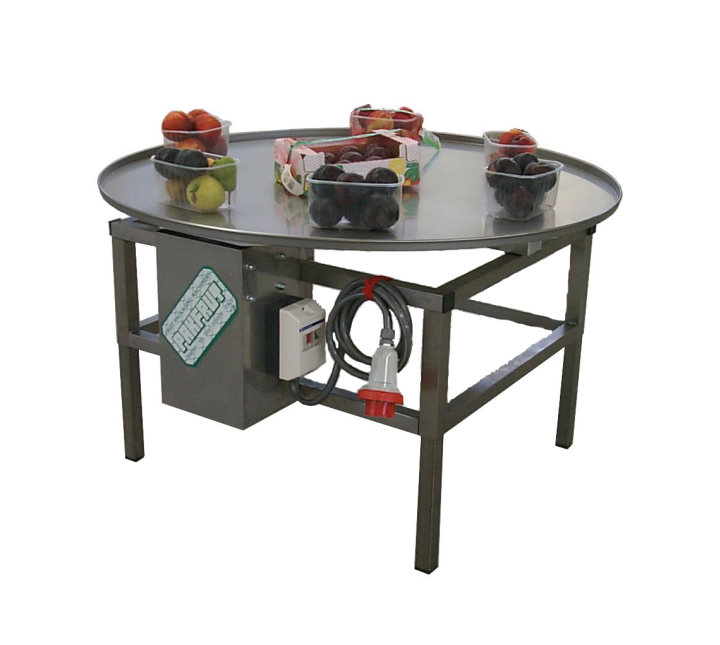
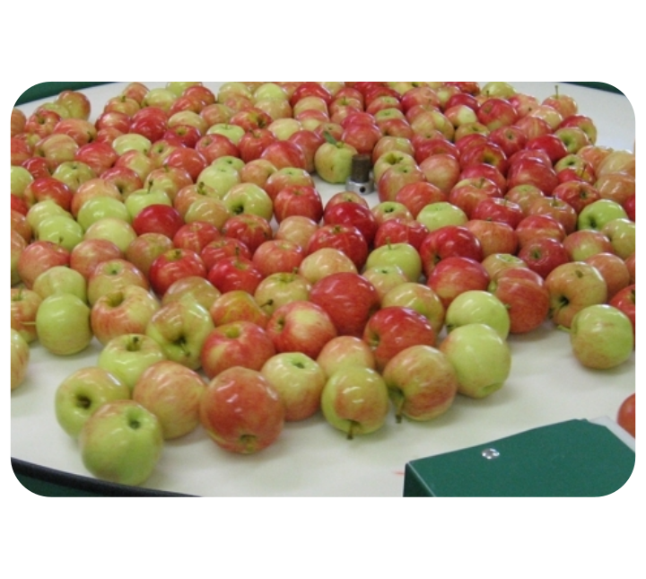
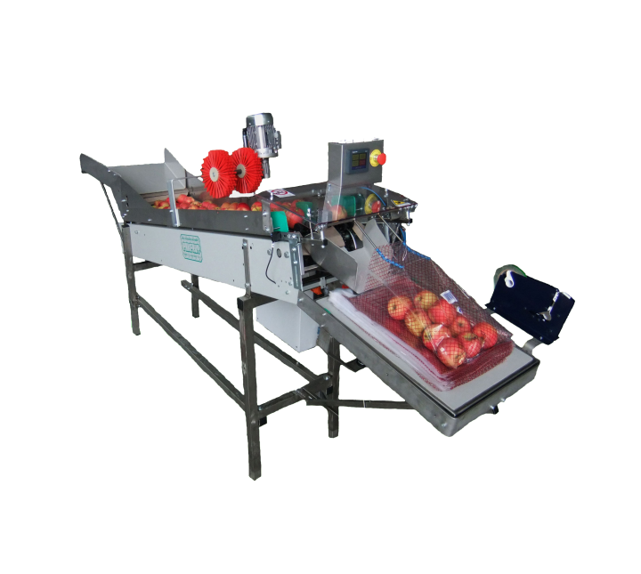
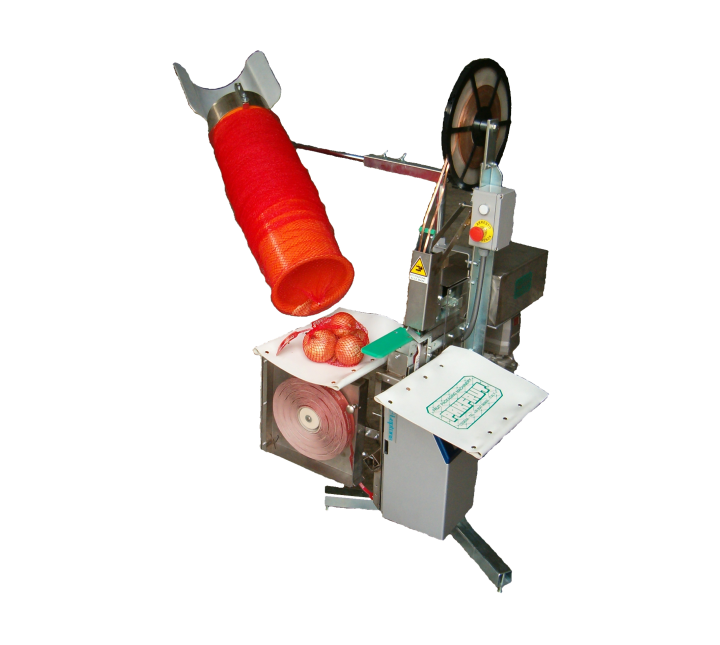
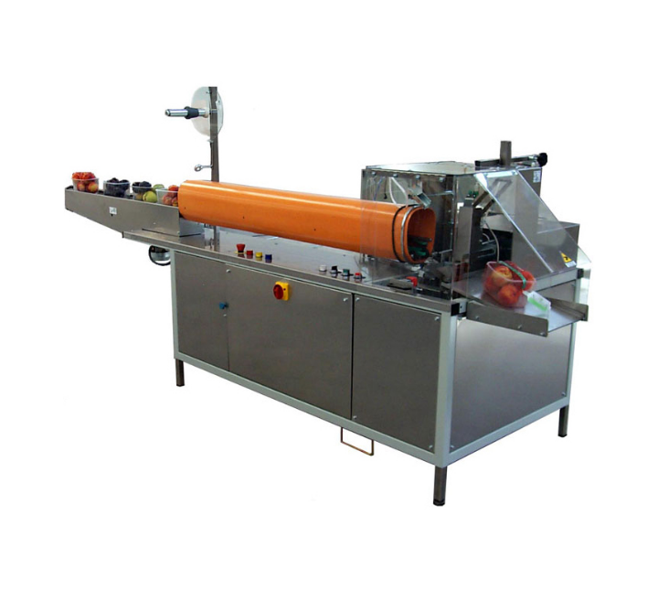
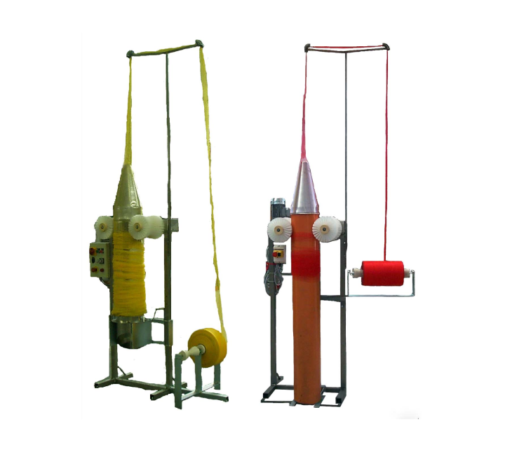
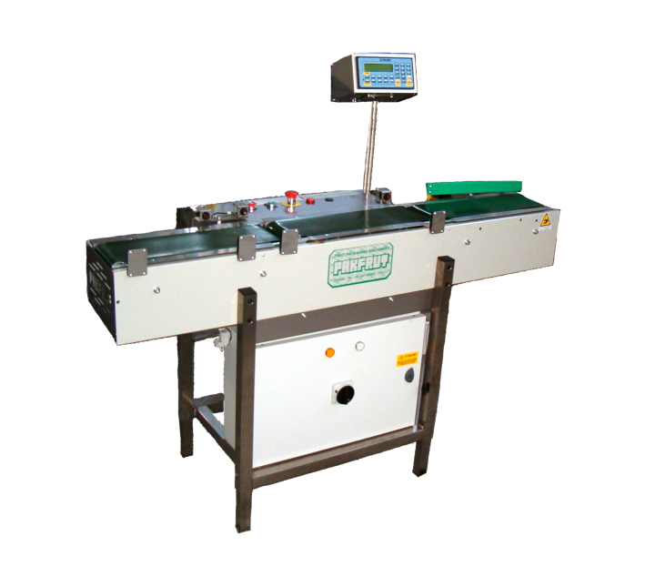
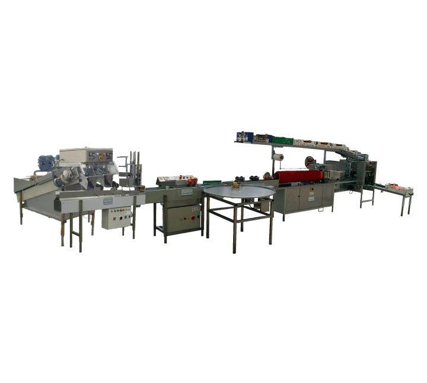
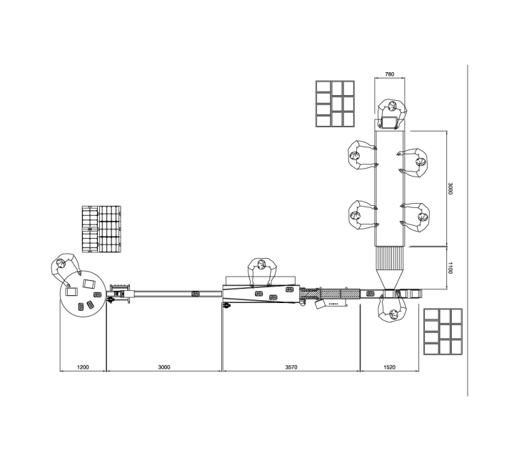

Today, more than ever, the market needs smaller packaging of fruits and vegetables from grams in containers to one, three, five, and ten kilograms depending on the product type.
Packaging should be adapted to each product to maximally preserve its quality and adapt to market requirements.
The final financial effects of production largely depend on the way and type of packaging.
It certainly pays more to offer the market calibrated fruit or vegetable products uniform in size and packaged in appropriate small packaging.
It pays the least when some fruit species, such as apples and pears, are sold in crates of 10-15kg in which first, second, and third class are mixed together at some average price. With the smallest packaging, the best financial effects are achieved.

In the process of preparing packaging of fruits and vegetables in so-called small packaging, Flowpack machines are optimal solutions. Before any measure for packaging, we must start from the question WHAT DOES THE MARKET – CUSTOMER WANT?
The market – customers in EU countries, and now increasingly with us, require that fresh fruit and vegetable products be in closed packaging protected from the possibility of contamination. If it's about berries and small fruits, they are mainly packaged in PP and PET containers with a lid or shell lid.
However, when it comes to larger quantities, the container closure is done in a Flowpack machine, wrapped in perforated thin nylon film or net. The vertical Flowpack machine takes up relatively little space, has optimal capacity and acceptable price.
Some EU countries that pay increased attention to ecology and health correctness of food have banned the use of low-pressure sprayers because their droplets are usually sizes above 300 microns and very easily drip from leaves
The function of these packaging machines is to package certain types of fruits or vegetables in small packaging up to 1000g or a certain number of pieces in plastic film.
Berries and small fruits: strawberries, raspberries, blackberries, blueberries, etc. placed in containers of 250, 500, and 1000g, and their wrapping in thin perforated film. Containers packaged this way do not need a lid, which otherwise increases packaging costs.
Today, the dominant market requirement is that packaged fruits such as strawberries, raspberries, blueberries, etc. be closed with a lid or film without the possibility of any contamination.
Therefore, lids are placed on containers or they are wrapped in film on the flowpack machine. Which solution to choose depends on several factors: the quantity that needs to be packaged, daily quantities of harvest and packaging, the place of packaging (field or warehouse), etc.
Technical Characteristics:
Dimensions: Length 750mm, width 1000mm, height 1700mm
Minimum packaging dimension: 50x10x0mm
Maximum packaging dimension: 0x300x180mm
Drive power: 4kW
Voltage: 200V
Weight: 300kg
Maximum film width: 550mm
Capacity: 20-25 pieces per minute

A great advantage of this vertical type flowpack machine compared to horizontal types of machines is that it has the ability to package in multiple ways or multiple types of products.
- Closing containers in perforated film
- Packaging various vegetables and other products in perforated film, e.g., cucumbers, radishes, carrots, parsley, and all other types
The only requirement is to ensure that the height does not exceed 180mm.
Information about technical characteristics and prices is available upon request to interested customers.







Control scale. After filling, containers are placed on the control scale with measuring scale from 0,1 – 3kg (+/-4g).
Capacity is up to 55 containers per minute. All containers that are below minimum or above maximum set weight, the scale stops and removes them from the belt.

Control scale. After filling, containers are placed on the control scale with measuring scale from 0,1 – 3kg (+/-4g).
Capacity is up to 55 containers per minute. All containers that are below minimum or above maximum set weight, the scale stops and removes them from the belt.

The line has a capacity of 300kg/hour.
This line with necessary modifications or additions can also be for packaging in containers: peaches, plums, apricots, nectarines, and grapes.
The line packages cherries in containers:

In addition to the shown machines and lines for packaging fruits and vegetables, our offer also includes the following lines:
Copyright Nibon Pak All Rights Reserved. Development & SEO Web Vortex